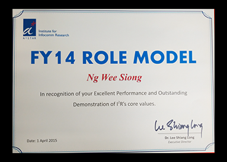
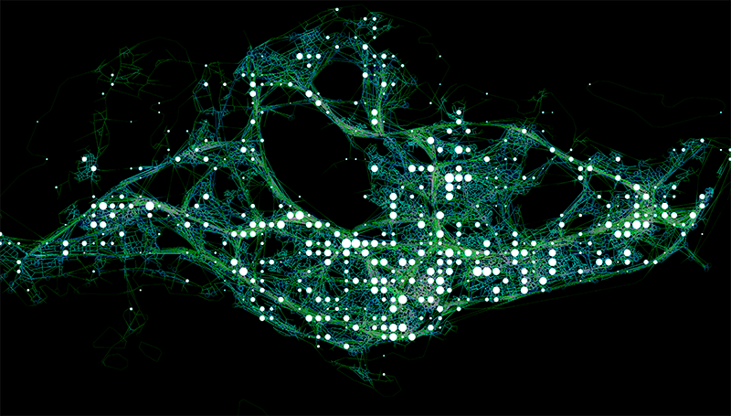

5. Institute for Infocomm Research Role Model FY 2014

|
| 4. A*STAR Borderless Award 2014 (team member of Urban Systems Initiative).
|
|
| 3. Best Paper Award - Wee Siong Ng, Huayu Wu, Wei Wu,
Shili Xiang, Kian-Lee Tan:
Privacy Preservation in Streaming Data Collection. IEEE International
Workshop on Scalable Computing for Big Data Analytics (SC-BDA)
collocated with ICPADS 2012, Singapore. |
|
2. Traffic Magic won the Overall Best prize and Best
Technology prize in the A*STAR Image in Research competition 2011

|
|
| 1. Xiaohui Li, Wei Wu, Wee Siong Ng: Ranked 6th (over 96 teams) at the IEEE International Conference on Data Mining 2010 Contest, Traffic Prediction Category |
 Wee
Siong Ng (Ph.D)
Wee
Siong Ng (Ph.D)